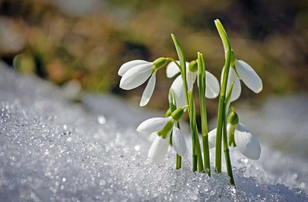
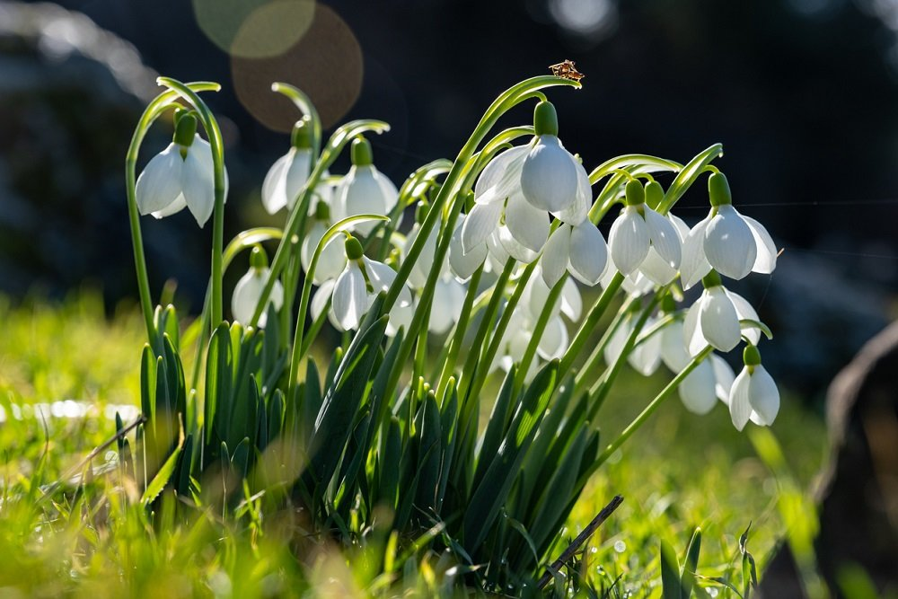

Підсніжник (Galanthus) — рід рослин родини амарилісових, підродини Amaryllidoideae. Налічує 20 видів. Більшість з них розквітають у зимовий час, до весняного рівнодення (21 березня в північній півкулі), але деякі види цих рослин розквітають ранньою весною і пізно восени. Зимостійка, дрібно-цибулинна рослина. Інші назви, що трапляються в українській мові: пролісок, скоролісок, просерен. Деякі види занесені до червоної книги України
Багаторічні трав'янисті цибулинні рослини. Усі представники роду мають квітки білого забарвлення, що відображено в науковій назвi Galanthus — від давньогрецьких слів гала «молоко» та антос «квітка». В Україні є три види підсніжника: підсніжник звичайний, підсніжник складчастий, підсніжник Ельвеза. В Україні підсніжники з'являються наприкінці зими, ранньою весною. Підсніжник звичайний — це рослина з білосніжними квітами, що родом із півдня Європи, де він росте в гірських лісах на вологому ґрунті. Коли бутон підсніжника розкривається, спочатку розходяться три зовнішні, довгі чисто-білі листочки, потім відкриваються три внутрішні, коротші. Усередині заховано шість тичинок і маточка. В Україні підсніжники під охороною, тому їх занесено до Червоної книги. Європейські квітникарі вивели багато сортів підсніжника білосніжного.
Цветы Подснежники белого цвета, имеют зелёные пятнышки с самого края лепестков (растения других цветов подснежниками НЕ являются). Изящную колокольчатую форму галантусы придает строение его лепестков: цветок имеет шесть лепестков, три из которых - наружные (более длинные), три - внутренние (короткие) .Листьев у этого цветка немного, форма - узкая, плоская, темно-зелёного или серо-зеленого цвета. Листья галантусы обычно шириной около 1 см. Округлой формы луковица растения, из которой вырастает лишь один цветок, небольшая: около трёх сантиметров в диаметре.
Всього існує 18 видів і два природних гібрида галантусов, більшість яких занесені в Червону книгу. Дванадцять з них ростуть на пострадянському просторі (найбільше - на Кавказі). Особливою популярністю користуються три види ЦИХ рослин: Галантуси білосніжні. Білий пролісок (має понад 50 різновидів) Не тільки розквітає раніше всіх своїх родичів, а й цвіте довше всіх - близько 30 днів. Рослини ці середньої довжини - від 7 до 12 см, квітки його витончені, білі, з жовтим плямочка всередині, мають приємний аромат. Проліски снігові. Проліски снігові є одним з Найбільш популярних видів цієї рослини, цвіте в середині-кінці березня, а росте в лісах Європи. Висота - від 10 до 15 см, листя плоскі, сіро-зеленого кольору шириною від 0,4 до 1 см, довжина - 10 см. Квітка цього виду рослини має розріз, а в іншому виглядає як більшість представників свого роду - середніх розмірів, з поникающих дзвіночком, білий з зеленим цятка. Галантуси Ельвеса. Проліски Ельвеса можна побачити в лісах Малої Азії, при цьому цвісти вони починають раніше проліски снігового і відрізняються більшими розмірами. Висота проліски Ельвеса від 15 до 25 м, листя блакитно-зелені, ширина їх може рідко досягати 2 см, а квіти проліски білого кольору, великі, кулясті.
Пролісок лісової виявився жертвою людської любові, оскільки після суворої сніжної зими люди, зголоднілі по зелені, не проти принести додому букет пролісків і прикрасити ним квартиру. Зривають їх абсолютно даремно - до цього часу пролісок лісовий тільки з'явився, виду особливого не має, оскільки ще не розцвів, та й коштують ці квіти недовго - всього лише кілька днів.
Особливо страждають ці рослини на початку весни, під час весняних свят, коли на 8 березня жінкам дарують ці ніжні по виду квіти. Пролісок лісової занесений до Червоної книги як зникаючий вид, а значить рвати і збирати його в лісі для того, щоб сформувати букет пролісків - забороняється. Разом з тим поки є попит, завжди буде і пропозиція, а тому вже в кінці весни проліски, зірвані в лісі, у величезній кількості продають на вулицях і ринках як великих, так і дрібних міст.
Купуючи пролісок лісовий, необхідно завжди мати на увазі, що браконьєри отримують, таким чином, непоганий дохід і відчутний стимул для того, щоб і в наступному році відшукати, викопати проліски в снігу і привести їх в місто (ніякі передбачені законом штрафи їх не лякають, адже вигода все одно більше).
Якщо дуже вже хочеться порадувати себе і своїх близьких галантус і принести додому букет пролісків, можна придбати рослини, вирощені в теплицях (щоб переконатися, що продавець не шахрай, досить попросити у нього сертифікат). Квітникарі - це рослина вирощують із задоволенням, оскільки робити це не дуже складно. Абсолютно невибагливими квіти не є: незважаючи на те, що вони добре переносять перепади погоди і температури, вони дуже вимогливі до землі - тому квітникарі для посадки цих квітів спеціально набувають парник пролісок, що ідеально підходить для установки в грунт або в теплицю (він перешкоджає переохолодженню грунту і створює для вирощування галантусов оптимальні умови).